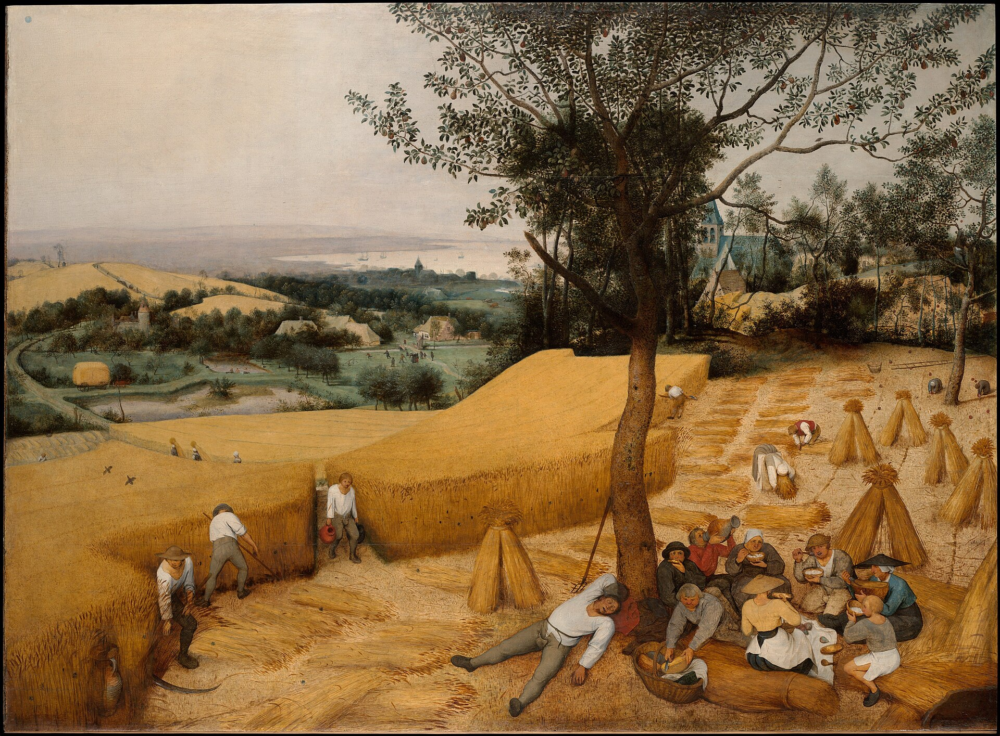
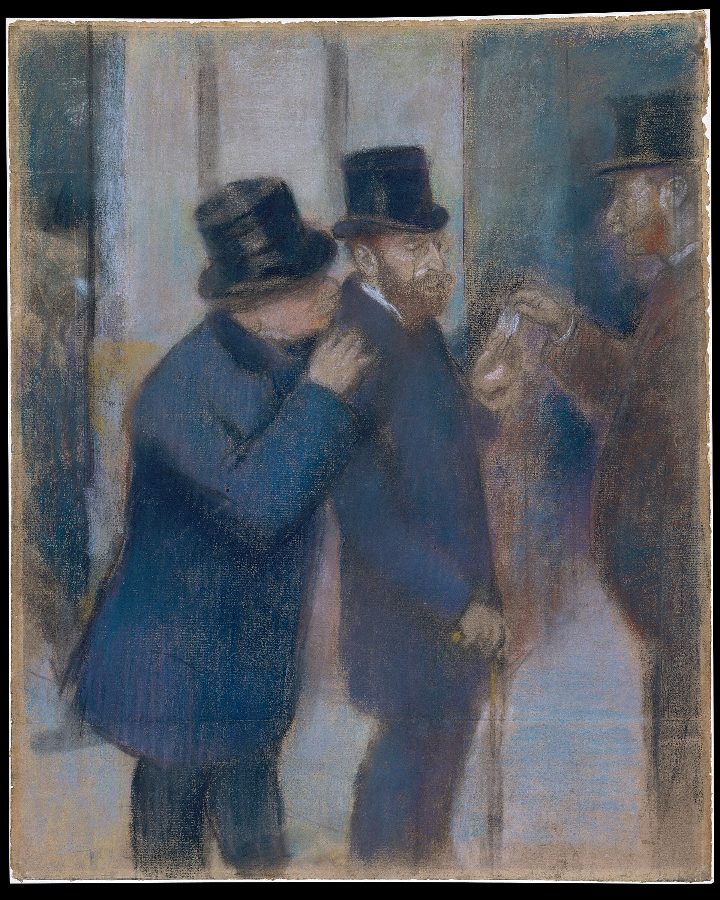

Tönnies, Gemeinschaft und Gesellschaft (Community and Society), Book I §§1–5 and Book II §1 (1887)
💡 CONTEXT
Tönnies grew up on a farm in Schleswig and wrote this book in his early thirties, as Germany was turning from a country of villages into one of cities and factories. Book I builds two concepts, first Gemeinschaft and then Gesellschaft. Book II asks what kind of human will stands underneath each. The two forms are pure concepts, not descriptions of real groups: every actual family, firm, or town mixes them.
📊 THE ARGUMENT AT A GLANCE
TWO KINDS OF WILL, TWO KINDS OF BOND
BOOK I: WHERE GEMEINSCHAFT GROWS
THE BODYBirth, descent, and sex join people before anyone chooses.
→
KINSHIP · NEIGHBORHOOD · FRIENDSHIPThe bond widens from blood, to shared place, to shared mind.
GEMEINSCHAFTRelationships valued as part of a shared life.
KÜRWILLE · RATIONAL WILLThe will is made by thinking. Deliberation, decision, concept.
→
GESELLSCHAFTRelationships made by contract and exchange, for separate ends.
Body → psychology → sociology. The two forms are types to measure real groups against, not two historical eras.
📖 THE ARGUMENT, SECTION BY SECTION
1
Community begins as unity, not agreement Book I §1
CLAIMGemeinschaft rests on an original unity of human wills, and that unity survives even when people live apart.
REASONEach will belongs to a body, and bodies are joined by birth, by descent from the same parents, and by sex. People are already bound before any of them decides anything, so the starting point of social life is connection, not a collection of separate individuals.
ILLUSTRATIONA grown brother and sister on different continents are still family. Nothing they agreed to made them so. (Optima example.)
2
Three primal relationships, each binding differently Book I §1
CLAIMMother and child, husband and wife, and brothers and sisters are the strongest seeds of Gemeinschaft, but each is held together by something different.
REASONMother and child: the most instinctive bond, physical at first and gradually psychological. As the child grows able to care for itself, the bond would loosen, except that habit, shared memory, and the child’s gratitude hold it. Husband and wife: sexual attraction alone does not produce a lasting, mutual tie, and Tönnies says frankly that it can begin as the stronger party’s domination of the weaker. It becomes mutual through long habituation, children held in common, and a shared household. Brothers and sisters: joined by a common origin and a childhood lived together.
3
From blood to place to mind Book I §§2–5
CLAIMGemeinschaft extends outward from kinship to neighborhood and then to friendship.
REASONKin who share a house come to share land; families who work neighboring land come to share a village, its fields, and its customs; people who share work and belief come to share a common mind. At each stage the bond is still lived and inherited rather than negotiated. Authority inside Gemeinschaft follows the model of the father in the house: protective, and owed because of one’s position, not because of a contract.

Gemeinschaft of place: one village working its fields and sharing its meal. Pieter Bruegel the Elder, 1565. Public domain, via Wikimedia Commons.

Gesellschaft: men joined only by a deal, each pursuing his own end. Edgar Degas, 1878–1879. Public domain, via Wikimedia Commons.
4
Two forms of will Book II §1
CLAIMEvery act of will involves thinking, but the two can be related in opposite ways. In Wesenwille, natural will, thinking is contained in the will. In Kürwille, rational will, the will is contained in, and produced by, thinking.
REASONNatural will is the mental counterpart of a living body: a real, organic unity in which thought is one part, as the brain is one organ. Rational will is a construct of thought, a unity made by a planning mind, real only in relation to the person who thinks it. So natural will grows out of the past, from habit and memory, and carries the future the way a seed carries a plant. Rational will is fixed on the future and holds it as a plan.
ILLUSTRATIONKeeping up a family farm because one’s parents farmed it, versus buying a farm because a spreadsheet shows a return. (Optima example.)
5
Each will matches one form of association Book II §1
CLAIMThe forms of natural will (liking, habit, memory) belong to Gemeinschaft as essentially as the forms of rational will (deliberation, decision, concept) belong to Gesellschaft. In both cases the forms of will are the bonds themselves.
REASONThe first list names things that happen in a person; the second names things a person does. In natural will, means and ends belong together: the work and the life it serves are one thing. In rational will, means and ends separate and can even turn hostile, like the self-interested individuals of Hobbes, whom Tönnies names here.
6
The contrast term: contract and exchange
CLAIMGesellschaft is the form of association that rational will builds: people who remain fundamentally separate, connected by exchange and contract.
REASONWhere each person acts for ends he has chosen for himself, a relationship lasts only as long as both sides gain from it. Nothing is given that is not traded for something. In this sense, in Gesellschaft everyone becomes a kind of merchant. The bond is precise, limited, and ends when the contract is fulfilled.
EXAMPLELesson 7.02’s plumber: hired for a skill at an agreed price, owed nothing once the work is done.
⚖️ THE DISTINCTIONS THAT CARRY THE ARGUMENT
GIVEN / MADEGemeinschaft is found already in place at birth. Gesellschaft is constructed by agreement.
WESENWILLE / KÜRWILLEA will that includes thinking versus a thinking that produces a will.
PAST / FUTURENatural will is explained by habit and memory. Rational will is explained by the goal it aims at.
MEANS / ENDSUnited in natural will. Separated, and potentially opposed, in rational will.
BLOOD / PLACE / MINDThe three widening circles of Gemeinschaft: kinship, neighborhood, friendship.
TYPE / ERAThe pair names pure forms. Modern societies run mostly on Gesellschaft but still contain families and friendships.
❓ THE STRONGEST OBJECTION
Natural is not the same as good. Tönnies’s own account of marriage admits that a primal bond can begin as domination, and Lesson 7.02 notes that Gemeinschaft presses hard on anyone who does not fit. If the bonds that grow from birth and habit can carry subjugation, then the move from Gemeinschaft to Gesellschaft is not simply a loss. For many people, a contract they can enter and leave is a release.
A second objection comes from Durkheim (Week 4). Interdependence among different people is a real form of solidarity, not a counterfeit of the old one. Tönnies can reply that Durkheim answers what still holds society together, not what has been lost, but the reply concedes that his own verdict of loss is a value judgment layered on top of the analysis.
🎯 FOUR QUESTIONS
Distinguish natural will (Wesenwille) from rational will (Kürwille). Give one example of each operating in a social relationship.
Why is the family the paradigm case of Gemeinschaft? Is it because the family bond is the strongest, or because it is the least chosen?
Is Tönnies’s account of Gesellschaft purely a description of loss, or does it allow genuine goods in contractual, impersonal relationships? Support the answer from the argument above.
Durkheim would call the shift from mechanical to organic solidarity a transformation, not a loss. Is that a convincing reply to Tönnies? How would Tönnies respond?
✏️ AFTER THE QUESTIONS
▶ Question 3: does Gesellschaft bring any goods?
Yes, and a fair reading credits Tönnies with seeing them: freedom from inherited obligation, and the ability to choose associations, occupations, and beliefs that members of a Gemeinschaft could not. Notice how the argument frames those goods, though. Rational will is a construction of thought, and its unity is artificial; natural will is a living whole. On that framing, the goods of Gesellschaft look like compensations for a loss rather than achievements worth wanting for their own sake.
▶ Question 4: how would Tönnies answer Durkheim?
Calling the shift a transformation hides what happened. Natural will and rational will are not two settings on one dial; they differ in kind, because they relate will and thought in opposite ways. A society that trades one for the other has not converted community into a new form of community. It has replaced it with something that resembles community only from a distance, held together by contract rather than by shared life. Durkheim answers a real question, what still holds society together, but not Tönnies’s question, what was lost. Whether that means Tönnies wins the exchange or the two are talking past each other is a judgment the Community Institution Study will ask for again, about a real institution, in Weeks 9 and 10.
➡️ NEXT
1
Sociological Journal 7
Optima Academy Online · SOCIOLOGY · Quarter 1 · Text Study
Tönnies, Gemeinschaft und Gesellschaft I.1–5, II.1 (1887)